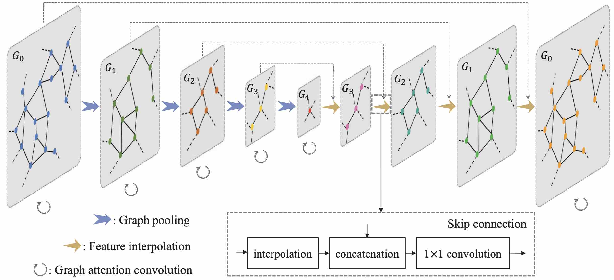
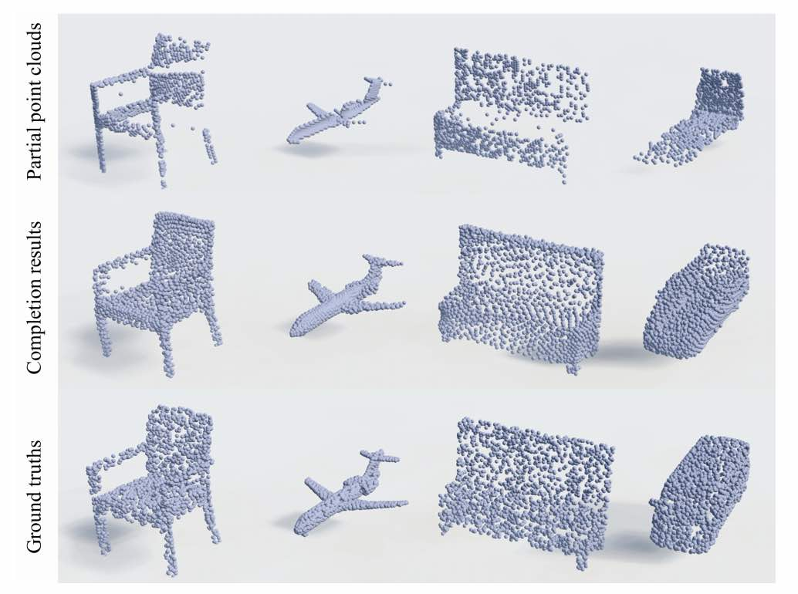
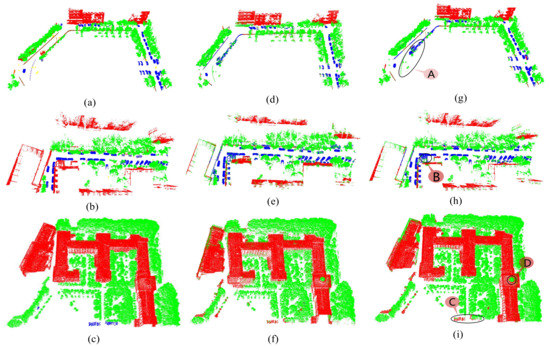
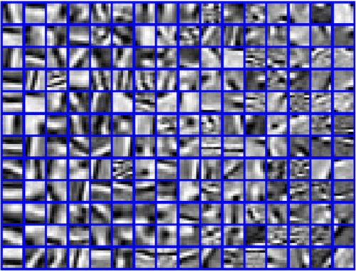
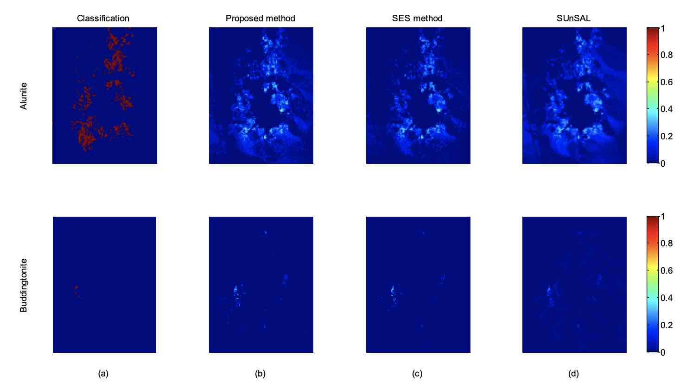
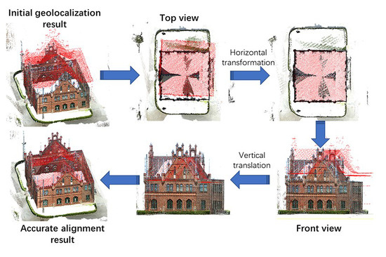
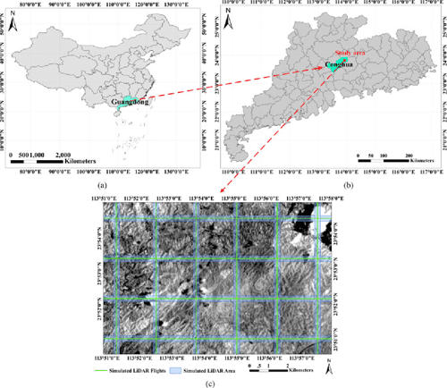
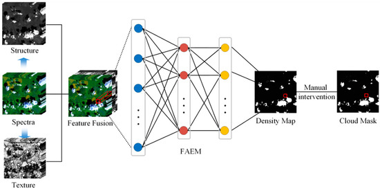
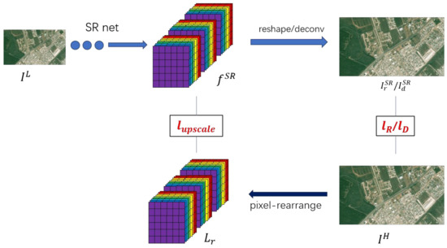

Publications
|  |
Graph attention convolution for point cloud semantic segmentation
CVPR 2019
|
|  |
Learning geometry-image representation for 3D point cloud generation
Arxiv 2020
|
|  |
MSNet: Multi-Scale Convolutional Network for Point Cloud Classification
Remote Sensing 2018
|
|  |
Remote Sensing Image Super-resolution using Sparse Representation and Coupled Sparse AutoEncoder
IEEE Journal of Selected Topics in Applied Earth Observations and Remote Sensing 2019
|
|  |
Hyperspectral Imagery Further Unmixing Based on Analysis of Variance
LEMCS 2015
|
|  |
Building Façades in Open LiDAR Data Using Ground Images
Remote Sensing 2019
|
|  |
Stacked sparse autoencoder modeling using the synergy of airborne LiDAR and satellite optical and sar data to map forest above-ground biomass
IEEE Journal of Selected Topics in Applied Earth Observations and Remote Sensing 2017
|
|  |
Fuzzy autoencode based cloud detection for remote sensing imagery
Remote Sensing 2017
|
|  |
Super-Resolution for “Jilin-1” Satellite Video Imagery via a Convolutional Network
Sensors 2018
|